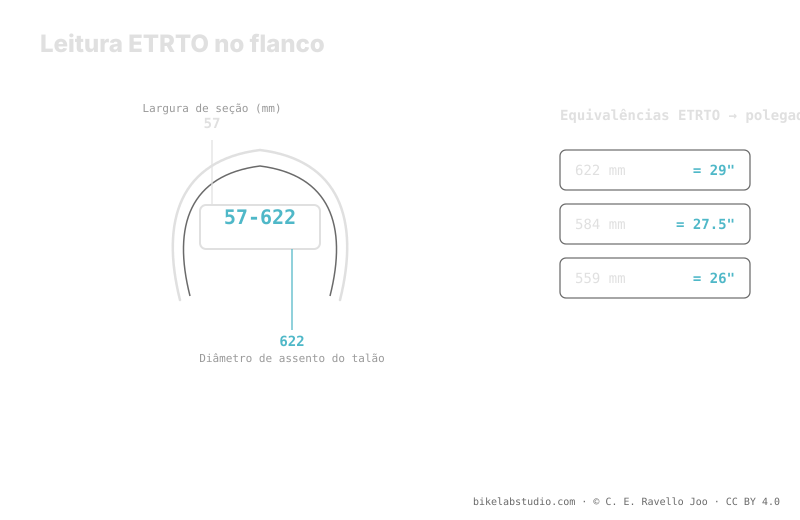

Em 57-622, o 57 é a largura nominal em milímetros e o 622 é o diâmetro do assento do talão em milímetros: isso é o aro de 29". 584 é 27.5" e 559 é 26". Diferente das polegadas de marketing, a ETRTO não engana sobre se pneu e aro encaixam. No flanco também vão a pressão mínima e máxima do fabricante; em aros hookless o teto costuma ser 5 bar (72.5 PSI). O valor de uso é fechado pela calculadora, não pelo flanco.
"29 polegadas" é uma etiqueta comercial; "622" é um fato. Se você já duvidou se um pneu monta no seu aro, ou por que dois "2.25" medem diferente, a resposta está nesses dois números pequenos do flanco. A pressão não é um número, mas a medida é.
A ETRTO te diz qual pneu você tem; a Calculadora de Pressão PSI te diz a que pressão rodá-lo conforme sua largura, aro, peso e disciplina. ▶ Abrir a calculadora PSI
ETRTO são as siglas de European Tyre and Rim Technical Organisation, o organismo que padroniza como pneus e aros são medidos. Em vez de deixar o tamanho às polegadas comerciais —que arredondam e variam—, a ETRTO fixa dois milímetros duros: a largura nominal e o diâmetro do assento do talão. Esse é o par de números que aparece no flanco como largura-diâmetro, por exemplo 57-622. Com eles, qualquer pneu e qualquer aro do mundo falam a mesma língua.

As polegadas vendem bikes; a ETRTO monta rodas. Quando quiser saber se algo encaixa, olhe os milímetros, não a polegada.
O primeiro número da ETRTO, o 57 de 57-622, é a largura nominal em milímetros. É a largura de referência declarada pelo fabricante, medida sobre um aro de referência. Atenção: essa largura não é fixa, porque o mesmo pneu se abre de forma diferente conforme a largura interna do aro em que você o monta. Por isso a largura nominal é um ponto de partida honesto, mas a largura real depende também do aro. Ainda assim, em milímetros e não em polegadas, é uma medida muito mais útil do que um "2.25" aproximado.
O segundo número é o que de fato decide a compatibilidade: o diâmetro do assento do talão em milímetros, o diâmetro onde o talão se ancora ao aro. Aqui não há margem de interpretação:
Se o diâmetro ETRTO do pneu e o do aro coincidem, montam. Se não coincidem, não há polegada de marketing que os faça encaixar. Por isso, quando você compra um pneu ou um aro usado e só te dão "27.5", pode traduzir com segurança para 584 e conferir que tudo casa.
Dois pneus marcados com a mesma polegada podem ter larguras reais distintas, alturas distintas e até se comportar diferente, porque a polegada é uma etiqueta grosseira. A ETRTO, ao contrário, é um número medido. A largura pode crescer ou encolher conforme o aro, mas o diâmetro de assento do talão é inamovível: 622 é 622 em qualquer marca. Essa é a medida que não mente sobre o essencial —se encaixa— e a largura em milímetros é muito mais confiável do que a polegada para estimar volume e comportamento.
Ao lado da ETRTO, o fabricante imprime no flanco a pressão mínima e máxima. São os limites da faixa segura desse pneu, não uma recomendação de uso: abaixo do mínimo você arrisca desmontar o talão ou danificar o aro, acima do máximo força o pneu. Dentro dessa faixa, sua pressão concreta depende do seu peso, sua largura, seu aro, seu terreno e seu estilo. Em montagens hookless, o fabricante costuma fixar um teto de 5 bar (72.5 PSI) que você não deve ultrapassar pela segurança do sistema.
57 é a largura nominal em milímetros e 622 o diâmetro de assento do talão, que é o aro de 29".
622 é 29", 584 é 27.5" e 559 é 26". Esse diâmetro decide se pneu e aro encaixam.
Dá milímetros medidos de largura e de diâmetro do talão; a polegada só arredonda. Dois "27.5" podem ter ETRTO diferente.
Impressa no flanco ao lado da medida. É o limite seguro, não sua pressão de uso; em hookless o teto costuma ser 5 bar (72.5 PSI).
A ETRTO fixa sua medida; a Calculadora de Pressão PSI fecha sua faixa real dentro dos limites do flanco conforme largura, aro, peso e disciplina. ▶ Abrir a calculadora PSI
© 2026 BikeLab Studio. Conteúdo sob CC BY 4.0: você pode copiar, traduzir e publicar, inclusive com fins comerciais. A citação é obrigatória. Sem atribuição, a licença é revogada automaticamente (CC BY 4.0, §6.a) e o uso passa a ser violação de direitos autorais: solicitamos a retirada do conteúdo e sua desindexação. · Design e propriedade: Carlos Ravello Joo